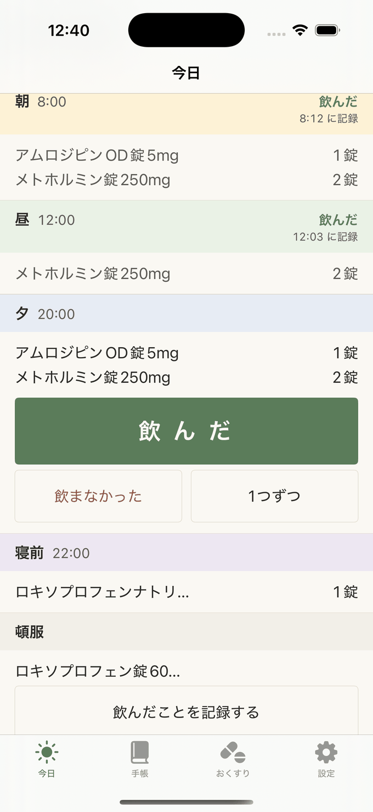
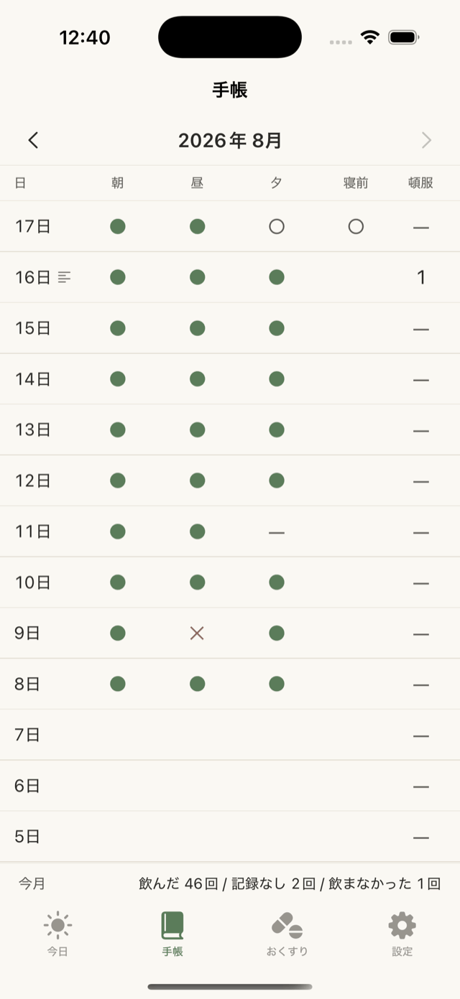
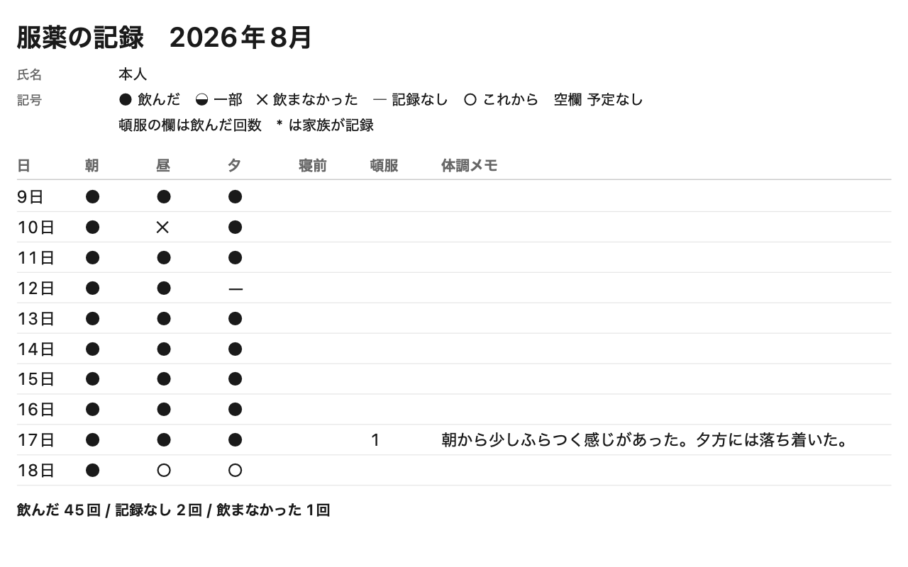
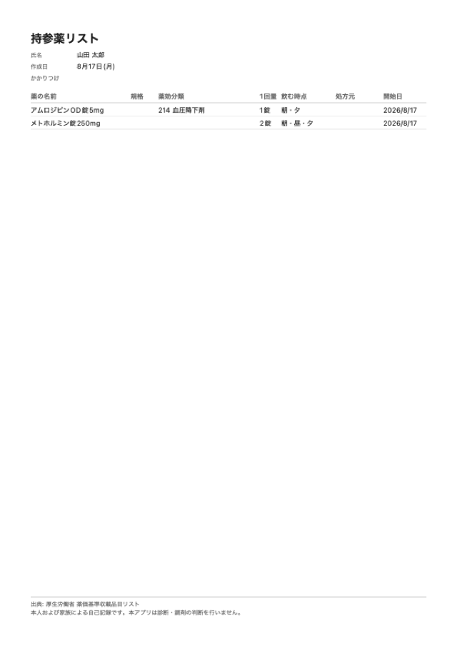
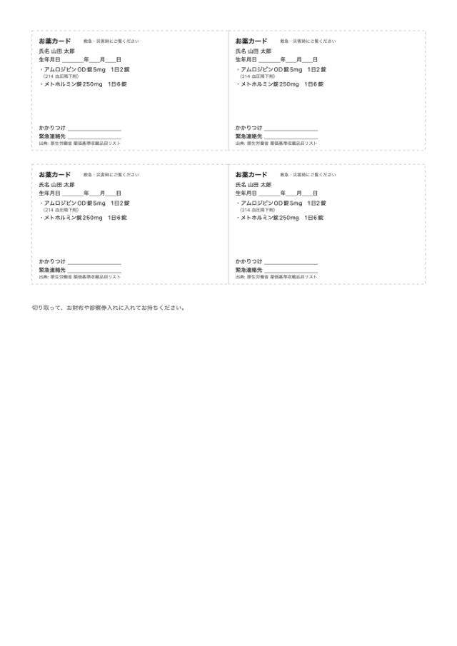
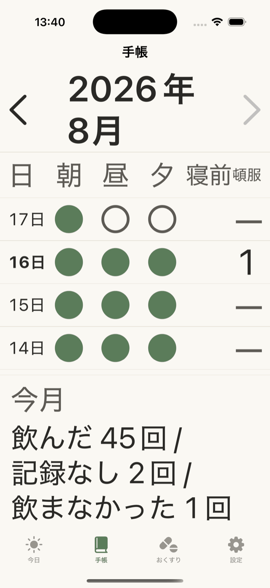

のみきろく
飲んだら、指で1回。
それだけの、お薬の記録です。

1日を、4つに分けています。
朝8:00
昼12:00
夕20:00
寝前22:00
時間になると、お知らせします。同じ時間のお薬は、何種類あっても指で1回。押した時刻も残ります。
1か月分が、1枚の紙になります。


飲んだ
飲まなかった
記録なし
これから
数えた回数だけを出します。割合は出しません。
紙は、3種類あります。

持参薬リスト
A4・1枚

お薬カード
名刺の大きさ・4面
服薬の記録
1か月分
印刷しても、そのまま送ってもかまいません。
離れて暮らすご家族に、今日の分が届きます。
- 今日の記録
- 直近14日
- お薬
- 次の受診
- 最後に届いた時刻
ご家族は代わりに記録を付けるだけで、お薬は変えられません。
「飲んでいません」とは知らせません。3日以上届かないときだけ、お知らせします。
文字は、アプリの中で大きくできます。

お薬について、何も判断しません。
医療機器ではありません。飲む量・回数・時間は、お医者さんや薬剤師さんの指示に従ってください。
お金のこと
お知らせと記録は、ずっと無料です。紙・ご家族との共有・お薬の残りの計算は有料です。
最初の30日は、全部お試しいただけます。有料は買い切りと1年ごとの2つから選べます。
1年ごとの自動更新と、解約のしかた